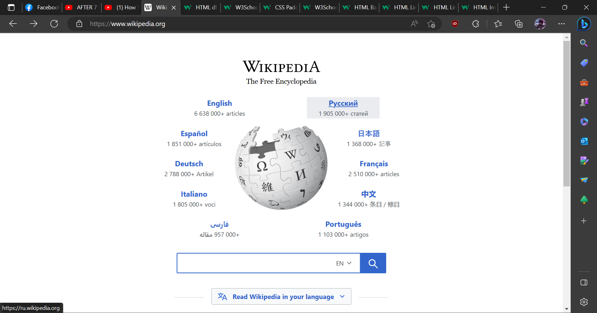
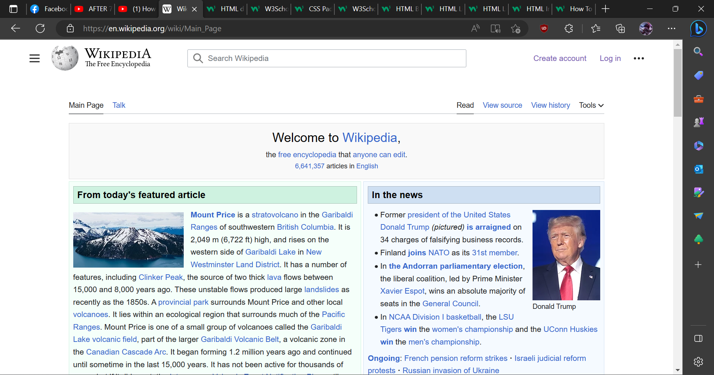

Assignment No.1
Wikipedia
- 1. What is the URL of the site?
- - https://www.wikipedia.org/
- 2. What is the purpose of the site?
- - The purpose of the site is to benefit readers by acting as a widely accessible and free encyclopedia that contains information on all branches of knowledge.
- 3. Who is the intended audience?
- - Anyone who wants their questions answered. Basically everyone who's curiosity is piqued or someone who wants to pass an assigment.
- 4. Do you think that the site reaches its intended audience? Why or why not?
- - Yes it does. When you search basically anything on a search engine, chances are its wikipedia definition will pop up on the first page of the search engine. Those who are curious of learning those specific topics will be able to see the site of wikipedia and that's why they reach their intended audience.
- 5. Is the site useful to you? Why or why not?
- - The site is useful for me. When tasked with reporting or assigments that need descriptions of particular topics, Wikipedia is my go to site. Although I find similar sites that give the same meanings and descriptions to fact check Wikipedia, using it for spontaneous questions is really useful for a curious person like me.
- 6. Does this site appeal to you? Why or why not?
- - Yes the site is appealing for me. Its simplistic use of black, white, and blue as its main color makes it really easy for me to read and navigate through the sites contents. You can easily find the thing you are searching for with their searchbar. If you want to fact check you can easily find their references and links. The way images appear next to the text is also great since it doesn't occcupy neither a big nor small space
- 7. Would you encourage others to visit this site? Why or why not?
- - Yes I would encourage others if they do not know the existence of the site yet. It is an overall great site to collect information and learn about certain things on a whim. Personally, I would recommend them to use the site for educational purposes.
- 8. How could this site be improved?
- - An option for dark mode is good, or maybe adding a customizeable user interface feature instead.
Wikipedia Images

